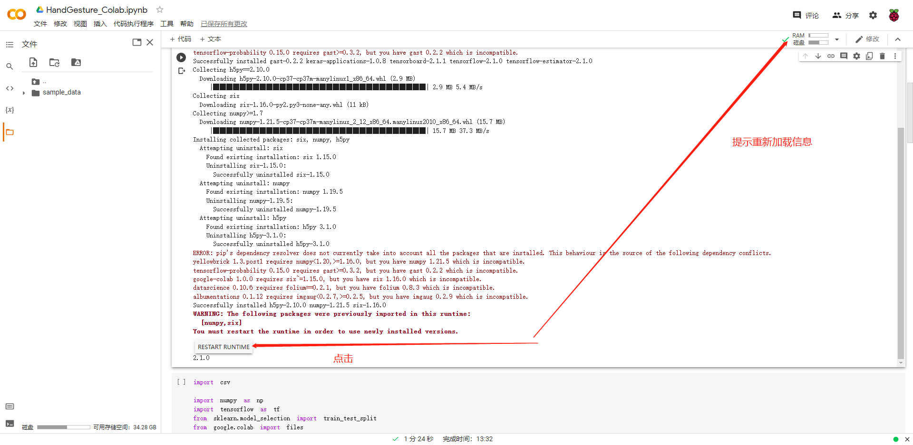

TF fix Version tflite
树莓派的tflite版本不是最新的，所以需要将导出的tflite指定版本
参考文档
install
python3 –version
Python 3.7.3
pip3 install https://dl.google.com/coral/python/tflite_runtime-2.1.0.post1-cp37-cp37m-linux_armv7l.whl
python 3.7
tensorflow 2.1.0
train
0008_TF_fix_Version_tflite
需要注意下面运行完成之后，记得点击下面的
RESTART RUNTIM!pip install tensorflow==2.1 !pip install 'h5py==2.10.0' --force-reinstall import tensorflow print(tensorflow.__version__)

test data
print data
# Inference test
predict_result = model.predict(np.array([X_test[0]]))
print(X_test[0])
print(np.squeeze(predict_result))
print(np.argmax(np.squeeze(predict_result)))
log
[-1.3194e-02 6.8620e-03 1.5590e-02 2.8740e-02 2.7185e-02 1.2828e-02
4.0429e-02 4.1205e-02 2.6742e-02 2.5640e-03 3.0143e-02 2.9686e-02
1.0562e-02 -8.3320e-03 2.6354e-02 2.3919e-02 6.1170e-03 -4.2540e-03
1.9591e-02 2.3045e-02 5.7310e-03 1.4447e-02 -3.1540e-03 -1.7755e-02
-4.1493e-02 -6.2809e-02 -1.4507e-02 -4.1340e-03 -3.1030e-03 -5.4180e-03
-4.1090e-03 2.8040e-03 3.3470e-03 -3.8670e-03 7.5990e-03 1.8592e-02
1.2670e-02 1.0060e-02 2.6096e-02 2.9950e-02 2.7247e-02 2.4915e-02
8.8800e-02 6.4944e-02 4.6603e-02 2.5458e-02 6.7000e-04 -1.7520e-03
-1.1990e-02 6.7540e-03 2.9948e-02 -2.7240e-03 -1.2755e-02 1.2018e-02
2.8365e-02 -2.8000e-05 -6.1790e-03 1.5845e-02 4.0248e-02 1.1887e-02
3.4740e-03 1.7685e-02 3.8312e-02]
[3.6601465e-05 7.0327092e-06 9.9995637e-01]
2
example
code
import tflite_runtime.interpreter as tflite
import numpy as np
interpreter = tflite.Interpreter(model_path="HandGesture.tflite")
interpreter.allocate_tensors()
# Get I / O tensor
input_details = interpreter.get_input_details()
output_details = interpreter.get_output_details()
print(input_details)
print(output_details)
test_data = [-1.3194e-02, 6.8620e-03, 1.5590e-02, 2.8740e-02, 2.7185e-02, 1.2828e-02,
4.0429e-02, 4.1205e-02, 2.6742e-02, 2.5640e-03, 3.0143e-02, 2.9686e-02,
1.0562e-02,-8.3320e-03, 2.6354e-02, 2.3919e-02, 6.1170e-03,-4.2540e-03,
1.9591e-02, 2.3045e-02, 5.7310e-03, 1.4447e-02,-3.1540e-03,-1.7755e-02,
-4.1493e-02,-6.2809e-02,-1.4507e-02,-4.1340e-03,-3.1030e-03,-5.4180e-03,
-4.1090e-03, 2.8040e-03, 3.3470e-03,-3.8670e-03, 7.5990e-03, 1.8592e-02,
1.2670e-02, 1.0060e-02, 2.6096e-02, 2.9950e-02, 2.7247e-02, 2.4915e-02,
8.8800e-02, 6.4944e-02, 4.6603e-02, 2.5458e-02, 6.7000e-04,-1.7520e-03,
-1.1990e-02, 6.7540e-03, 2.9948e-02,-2.7240e-03,-1.2755e-02, 1.2018e-02,
2.8365e-02,-2.8000e-05,-6.1790e-03, 1.5845e-02, 4.0248e-02, 1.1887e-02,
3.4740e-03, 1.7685e-02, 3.8312e-02]
interpreter.set_tensor(input_details[0]['index'], np.array([test_data], dtype=np.float32))
# Inference implementation
interpreter.invoke()
tflite_results = interpreter.get_tensor(output_details[0]['index'])
print(np.squeeze(tflite_results))
print(np.argmax(np.squeeze(tflite_results)))
python3 tflite.py
[{'name': 'dropout_input', 'index': 1, 'shape': array([ 1, 63]), 'dtype': <class 'numpy.float32'>, 'quantization': (0.0, 0), 'quantization_parameters': {'scales': array([], dtype=float32), 'zero_points': array([], dtype=int32), 'quantized_dimension': 0}}]
[{'name': 'Identity', 'index': 0, 'shape': array([1, 3]), 'dtype': <class 'numpy.float32'>, 'quantization': (0.0, 0), 'quantization_parameters': {'scales': array([], dtype=float32), 'zero_points': array([], dtype=int32), 'quantized_dimension': 0}}]
[5.4742295e-06 2.4527573e-05 9.9996996e-01]
2